Charting with tidyquant
Matt Dancho
2024-06-01
Source:vignettes/TQ04-charting-with-tidyquant.Rmd
TQ04-charting-with-tidyquant.RmdCharting financial data using
ggplot2
Overview
The tidyquant package includes charting tools to assist
users in developing quick visualizations in ggplot2 using
the grammar of graphics format and workflow. There are currently three
primary geometry (geom) categories and one coordinate manipulation
(coord) category within tidyquant:
-
Chart Types: Two chart type visualizations are
available using
geom_barchartandgeom_candlestick. -
Moving Averages: Seven moving average
visualizations are available using
geom_ma. -
Bollinger Bands: Bollinger bands can be visualized
using
geom_bbands. The BBand moving average can be one of the seven available in Moving Averages. -
Zooming in on Date Ranges: Two
coordfunctions are available (coord_x_dateandcoord_x_datetime), which prevent data loss when zooming in on specific regions of a chart. This is important when using the moving average and Bollinger band geoms.
Prerequisites
Load the tidyquant package to get started.
# Loads tidyquant, xts, quantmod, TTR, and PerformanceAnalytics
library(tidyverse)
library(tidyquant) The following stock data will be used for the examples. Use
tq_get to get the stock prices.
# Use FANG data set
# Get AAPL and AMZN Stock Prices
AAPL <- tq_get("AAPL", get = "stock.prices", from = "2015-09-01", to = "2016-12-31")
AMZN <- tq_get("AMZN", get = "stock.prices", from = "2000-01-01", to = "2016-12-31")The end date parameter will be used when setting date
limits throughout the examples.
end <- lubridate::as_date("2016-12-31")
end## [1] "2016-12-31"The AAPL_range_60 will be used to adjust the zoom on the
plots.
aapl_range_60_tbl <- AAPL %>%
tail(60) %>%
summarise(
max_high = max(high),
min_low = min(low)
)
aapl_range_60_tbl## # A tibble: 1 × 2
## max_high min_low
## <dbl> <dbl>
## 1 29.7 26.0Chart Types
Financial charts provide visual cues to open, high, low, and close prices. The following chart geoms are available:
-
Bar
Chart: Use
geom_barchart -
Candlestick
Chart: Use
geom_candlestick
Line Chart
Before we visualize bar charts and candlestick charts using the
tidyquant geoms, let’s visualize stock prices with a simple
line chart to get a sense of the “grammar of graphics” workflow. This is
done using the geom_line from the ggplot2
package. The workflow begins with the stock data, and uses the pipe
operator (%>%) to send to the ggplot()
function.
The primary features controlling the chart are the aesthetic
arguments: these are used to add data to the chart by way of the
aes() function. When added inside the ggplot()
function, the aesthetic arguments are available to all underlying
layers. Alternatively, the aesthetic arguments can be applied to each
geom individually, but typically this is minimized in practice because
it duplicates code. We set aesthetic arguments, x = date
and y = close, to chart the closing price versus date. The
geom_line() function inherits the aesthetic arguments from
the ggplot() function and produces a line on the chart.
Labels are added separately using the labs() function.
Thus, the chart is built from the ground up by starting with data and
progressively adding geoms, labels, coordinates / scales and other
attributes to create a the final chart. This is enables maximum
flexibility wherein the analyst can create very complex charts using the
“grammar of graphics”.
AAPL %>%
ggplot(aes(x = date, y = close)) +
geom_line() +
labs(title = "AAPL Line Chart", y = "Closing Price", x = "") +
theme_tq()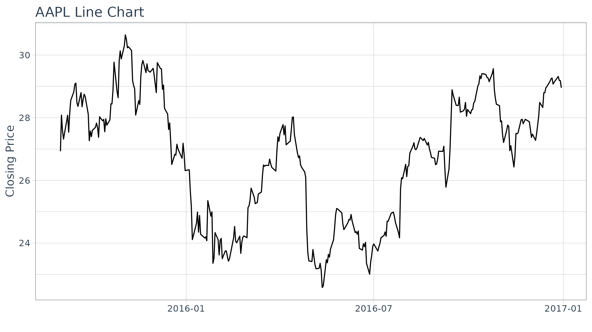
Bar Chart
Visualizing the bar chart is as simple as replacing
geom_line with geom_barchart in the ggplot
workflow. Because the bar chart uses open, high, low, and close prices
in the visualization, we need to specify these as part of the aesthetic
arguments, aes(). We can do so internal to the geom or in
the ggplot() function.
AAPL %>%
ggplot(aes(x = date, y = close)) +
geom_barchart(aes(open = open, high = high, low = low, close = close)) +
labs(title = "AAPL Bar Chart", y = "Closing Price", x = "") +
theme_tq()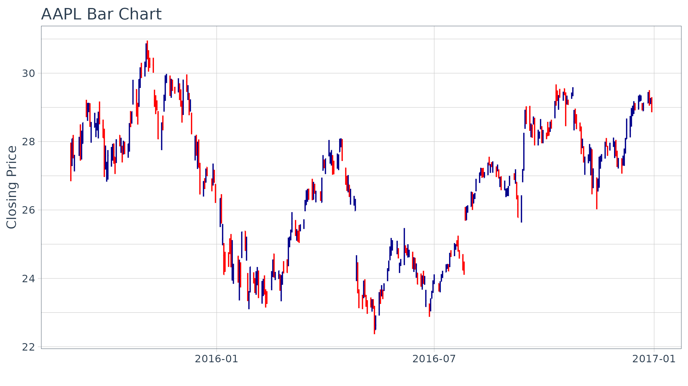
We zoom into specific sections using coord_x_date, which
has xlim and ylim arguments specified as
c(start, end) to focus on a specific region of the chart.
For xlim, we’ll use lubridate to convert a
character date to date class, and then subtract six weeks using the
weeks() function. For ylim we zoom in on
prices in the range from 100 to 120.
AAPL %>%
ggplot(aes(x = date, y = close)) +
geom_barchart(aes(open = open, high = high, low = low, close = close)) +
labs(title = "AAPL Bar Chart",
subtitle = "Zoomed in using coord_x_date",
y = "Closing Price", x = "") +
coord_x_date(xlim = c(end - weeks(6), end),
ylim = c(aapl_range_60_tbl$min_low, aapl_range_60_tbl$max_high)) +
theme_tq()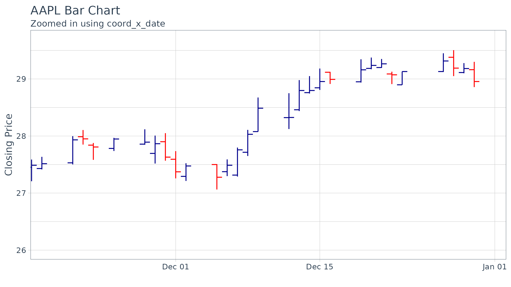
The colors can be modified using colour_up and
colour_down arguments, and parameters such as
size can be used to control the appearance.
AAPL %>%
ggplot(aes(x = date, y = close)) +
geom_barchart(aes(open = open, high = high, low = low, close = close),
colour_up = "darkgreen", colour_down = "darkred", size = 1) +
labs(title = "AAPL Bar Chart",
subtitle = "Zoomed in, Experimenting with Formatting",
y = "Closing Price", x = "") +
coord_x_date(xlim = c(end - lubridate::weeks(6), end),
c(aapl_range_60_tbl$min_low, aapl_range_60_tbl$max_high)) +
theme_tq()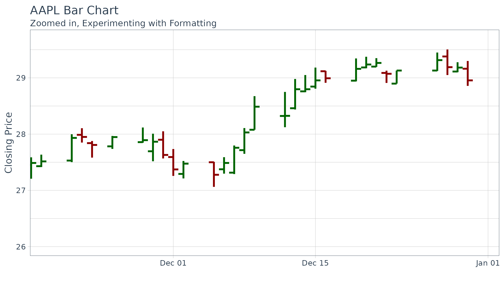
Candlestick Chart
Creating a candlestick chart is very similar to the process with the
bar chart. Using geom_candlestick, we can insert into the
ggplot workflow.
AAPL %>%
ggplot(aes(x = date, y = close)) +
geom_candlestick(aes(open = open, high = high, low = low, close = close)) +
labs(title = "AAPL Candlestick Chart", y = "Closing Price", x = "") +
theme_tq()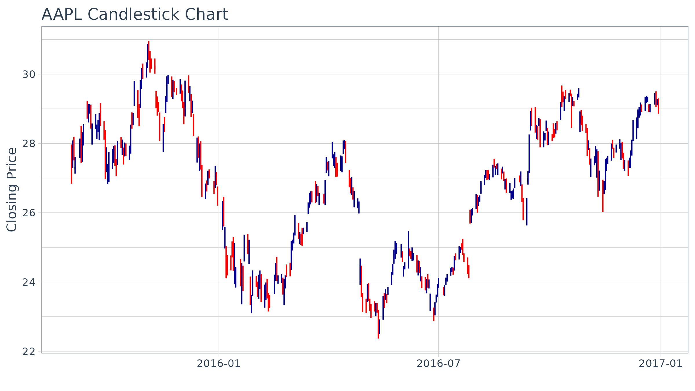
We zoom into specific sections using coord_x_date.
AAPL %>%
ggplot(aes(x = date, y = close)) +
geom_candlestick(aes(open = open, high = high, low = low, close = close)) +
labs(title = "AAPL Candlestick Chart",
subtitle = "Zoomed in using coord_x_date",
y = "Closing Price", x = "") +
coord_x_date(xlim = c(end - weeks(6), end),
c(aapl_range_60_tbl$min_low, aapl_range_60_tbl$max_high)) +
theme_tq()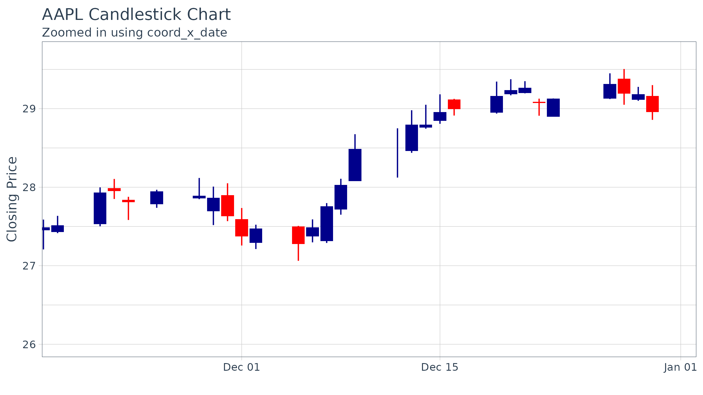
The colors can be modified using colour_up and
colour_down, which control the line color, and
fill_up and fill_down, which control the
rectangle fills.
AAPL %>%
ggplot(aes(x = date, y = close)) +
geom_candlestick(aes(open = open, high = high, low = low, close = close),
colour_up = "darkgreen", colour_down = "darkred",
fill_up = "darkgreen", fill_down = "darkred") +
labs(title = "AAPL Candlestick Chart",
subtitle = "Zoomed in, Experimenting with Formatting",
y = "Closing Price", x = "") +
coord_x_date(xlim = c(end - weeks(6), end),
c(aapl_range_60_tbl$min_low, aapl_range_60_tbl$max_high)) +
theme_tq()
Charting Multiple Securities
We can use facet_wrap to visualize multiple stocks at
the same time. By adding a group aesthetic in the main
ggplot() function and combining with a
facet_wrap() function at the end of the ggplot
workflow, all four “FANG” stocks can be viewed simultaneously. You may
notice an odd filter() call before the call to
ggplot(). I’ll discuss this next.
start <- end - weeks(6)
FANG %>%
dplyr::filter(date >= start - days(2 * 15)) %>%
ggplot(aes(x = date, y = close, group = symbol)) +
geom_candlestick(aes(open = open, high = high, low = low, close = close)) +
labs(title = "FANG Candlestick Chart",
subtitle = "Experimenting with Multiple Stocks",
y = "Closing Price", x = "") +
coord_x_date(xlim = c(start, end)) +
facet_wrap(~ symbol, ncol = 2, scale = "free_y") +
theme_tq()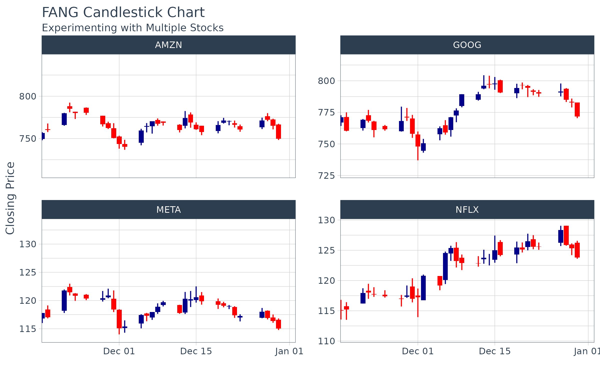
A note about out-of-bounds data (or “clipping”), which is particularly important with faceting and charting moving averages:
The coord_x_date coordinate function is designed to zoom
into specific sections of a chart without “clipping” data that is
outside of the view. This is in contrast to scale_x_date,
which removes out-of-bounds data from the charting. Under normal
circumstances clipping is not a big deal (and is actually helpful for
scaling the y-axis), but with financial applications users want to chart
rolling/moving averages, lags, etc that depend on data outside of the
view port. Because of this need for out-of-bounds data, there is a
trade-off when charting: Too much out-of-bounds data distorts
the scale of the y-axis, and too little and we cannot get a moving
average. The optimal method is to include “just enough”
out-of-bounds data to get the chart we want. This is why below the FANG
data is filtered by date from double the number of moving-average days
(2 * n) previous to the start date. This yields a nice
y-axis scale and still allows us to create a moving average line using
geom_ma.
start <- end - weeks(6)
FANG %>%
dplyr::filter(date >= start - days(2 * 15)) %>%
ggplot(aes(x = date, y = close, group = symbol)) +
geom_candlestick(aes(open = open, high = high, low = low, close = close)) +
geom_ma(ma_fun = SMA, n = 15, color = "darkblue", size = 1) +
labs(title = "FANG Candlestick Chart",
subtitle = "Experimenting with Multiple Stocks",
y = "Closing Price", x = "") +
coord_x_date(xlim = c(start, end)) +
facet_wrap(~ symbol, ncol = 2, scale = "free_y") +
theme_tq()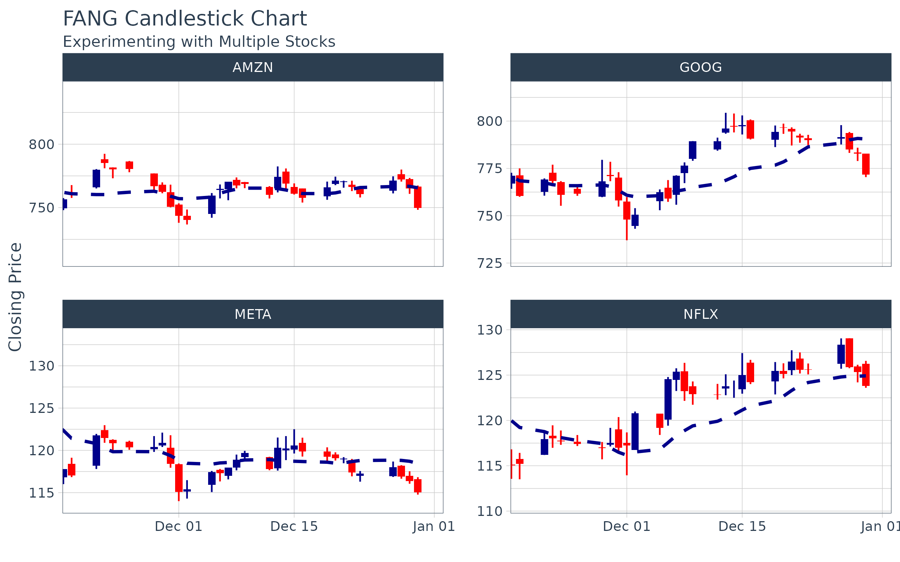
Visualizing Trends
Moving
averages are critical to evaluating time-series trends.
tidyquant includes geoms to enable “rapid prototyping” to
quickly visualize signals using moving averages and Bollinger bands.
Moving Averages
The following moving averages are available:
- Simple moving averages (SMA)
- Exponential moving averages (EMA)
- Weighted moving averages (WMA)
- Double exponential moving averages (DEMA)
- Zero-lag exponential moving averages (ZLEMA)
- Volume-weighted moving averages (VWMA) (also known as VWAP)
- Elastic, volume-weighted moving averages (EVWMA) (also known as MVWAP)
Moving averages are applied as an added layer to a chart with the
geom_ma function. The geom is a wrapper for the underlying
moving average functions from the TTR package:
SMA, EMA, WMA, DEMA,
ZLEMA, VWMA, and EVWMA. Here’s
how to use the geom:
- Select a moving average function,
ma_fun, that you want to apply. - Determine the function arguments that need to be passed to the
ma_fun. You can investigate the underlying function by searching?TTR::SMA. - Determine the aesthetic arguments to pass. These will typically be
aes(x = date, y = close). The volume-weighted functions will require thevolumeargument in theaes()function. - Apply the moving average geom in your
ggplotworkflow.
Important Note: When zooming in on a section, use
coord_x_date or coord_x_datetime to prevent
out-of-bounds data loss. Do not use scale_x_date, which
will affect the moving average calculation. Refer to Charting Multiple Securities.
Example 1: Charting the 50-day and 200-day simple moving average
We want to apply a SMA, so we research the TTR function
and we see that it accepts, n, the number of periods to
average over. We see that the aesthetics required are x, a
date, and y, a price. Since these are already in the main
ggplot() function, we don’t need to add the aesthetics to
the geom. We apply the moving average geoms after the candlestick geom
to overlay the moving averages on top of the candlesticks. We add two
moving average calls, one for the 50-day and the other for the 200-day.
We add color = "red" and linetype = 5 to
distinguish the 200-day from the 50-day.
AAPL %>%
ggplot(aes(x = date, y = close)) +
geom_candlestick(aes(open = open, high = high, low = low, close = close)) +
geom_ma(ma_fun = SMA, n = 50, linetype = 5, size = 1.25) +
geom_ma(ma_fun = SMA, n = 200, color = "red", size = 1.25) +
labs(title = "AAPL Candlestick Chart",
subtitle = "50 and 200-Day SMA",
y = "Closing Price", x = "") +
coord_x_date(xlim = c(end - weeks(24), end),
c(aapl_range_60_tbl$min_low * 0.9, aapl_range_60_tbl$max_high)) +
theme_tq()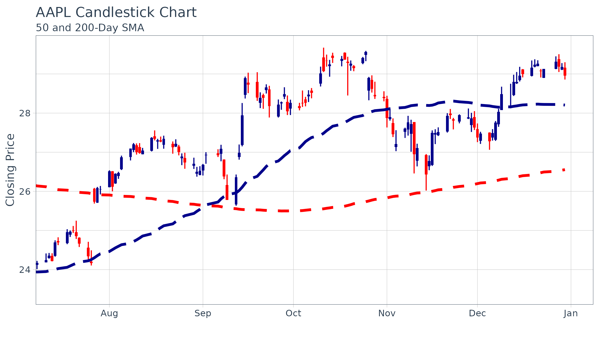
Example 2: Charting exponential moving averages
We want an EMA, so we research the TTR function and we
see that it accepts, n, the number of periods to average
over, wilder a Boolean, and ratio arguments.
We will use wilder = TRUE and go with the default for the
ratio arg. We see that the aesthetics required are
x, a date, and y, a price. Since these are
already in the main ggplot() function, we don’t need to
modify the geom. We are ready to apply after the bar chart geom.
AAPL %>%
ggplot(aes(x = date, y = close)) +
geom_barchart(aes(open = open, high = high, low = low, close = close)) +
geom_ma(ma_fun = EMA, n = 50, wilder = TRUE, linetype = 5, size = 1.25) +
geom_ma(ma_fun = EMA, n = 200, wilder = TRUE, color = "red", size = 1.25) +
labs(title = "AAPL Bar Chart",
subtitle = "50 and 200-Day EMA",
y = "Closing Price", x = "") +
coord_x_date(xlim = c(end - weeks(24), end),
c(aapl_range_60_tbl$min_low * 0.9, aapl_range_60_tbl$max_high)) +
theme_tq()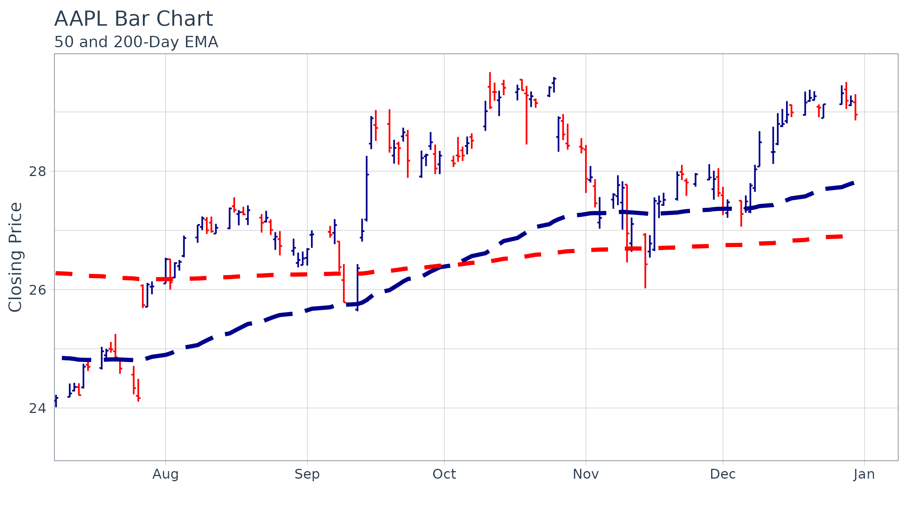
Example 3: Charting moving averages for multiple stocks at once
We’ll double up using a volume-weighted average (VWMA)
and apply it to the FANG stocks at once. Since VWMA is a volume-weighted
function, we need to add volume as an aesthetic. Because we are viewing
multiple stocks, we add a group aesthetic setting it to the symbol
column which contains the FANG stock symbols. The facet wrap is added at
the end to create four charts instead of one overlayed chart.
start <- end - weeks(6)
FANG %>%
dplyr::filter(date >= start - days(2 * 50)) %>%
ggplot(aes(x = date, y = close, volume = volume, group = symbol)) +
geom_candlestick(aes(open = open, high = high, low = low, close = close)) +
geom_ma(ma_fun = VWMA, n = 15, wilder = TRUE, linetype = 5) +
geom_ma(ma_fun = VWMA, n = 50, wilder = TRUE, color = "red") +
labs(title = "FANG Bar Chart",
subtitle = "50 and 200-Day EMA, Experimenting with Multiple Stocks",
y = "Closing Price", x = "") +
coord_x_date(xlim = c(start, end)) +
facet_wrap(~ symbol, ncol = 2, scales = "free_y") +
theme_tq()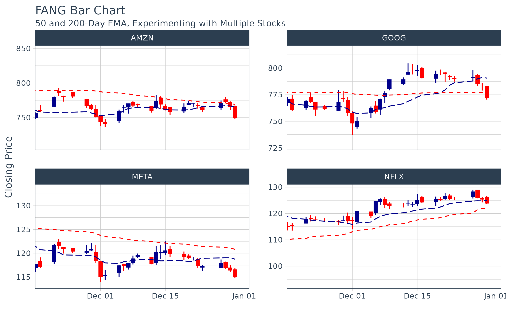
Bollinger Bands
Bollinger
Bands are used to visualize volatility by plotting a range around a
moving average typically two standard deviations up and down. Because
they use a moving average, the geom_bbands function works
almost identically to geom_ma. The same seven moving
averages are compatible. The main difference is the addition of the
standard deviation, sd, argument which is 2 by default, and
the high, low and close
aesthetics which are required to calculate the bands. Refer to Moving Averages for a detailed discussion on what
moving averages are available.
Important Note: When zooming in on a section, use
coord_x_date or coord_x_datetime to prevent
out-of-bounds data loss. Do not use scale_x_date, which
will affect the moving average calculation. Refer to Charting Multiple Securities.
Example 1: Applying BBands using a SMA
Let’s do a basic example to add Bollinger Bands using a simple moving
average. Because both the candlestick geom and the BBands geom use high,
low and close prices, we move these aesthetics to the main
ggplot() function to avoid duplication. We add BBands after
the candlestick geom to overlay the BBands on top.
AAPL %>%
ggplot(aes(x = date, y = close, open = open,
high = high, low = low, close = close)) +
geom_candlestick() +
geom_bbands(ma_fun = SMA, sd = 2, n = 20) +
labs(title = "AAPL Candlestick Chart",
subtitle = "BBands with SMA Applied",
y = "Closing Price", x = "") +
coord_x_date(xlim = c(end - weeks(24), end),
ylim = c(aapl_range_60_tbl$min_low * 0.85,
aapl_range_60_tbl$max_high) * 1.05) +
theme_tq()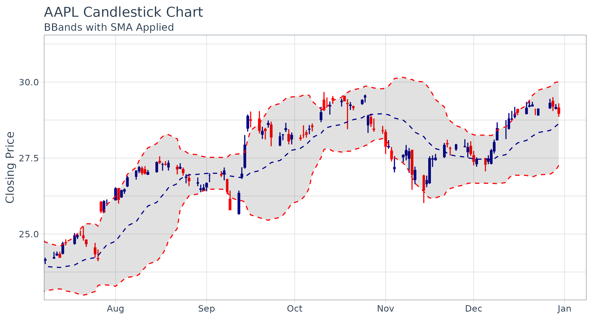
Example 2: Modifying the appearance of Bollinger Bands
The appearance can be modified using color_ma,
color_bands, alpha, and fill
arguments. Here’s the same plot from Example 1, with new formatting
applied to the BBands.
AAPL %>%
ggplot(aes(x = date, y = close, open = open,
high = high, low = low, close = close)) +
geom_candlestick() +
geom_bbands(ma_fun = SMA, sd = 2, n = 20,
linetype = 4, size = 1, alpha = 0.2,
fill = palette_light()[[1]],
color_bands = palette_light()[[1]],
color_ma = palette_light()[[2]]) +
labs(title = "AAPL Candlestick Chart",
subtitle = "BBands with SMA Applied, Experimenting with Formatting",
y = "Closing Price", x = "") +
coord_x_date(xlim = c(end - weeks(24), end),
ylim = c(aapl_range_60_tbl$min_low * 0.85,
aapl_range_60_tbl$max_high) * 1.05) +
theme_tq()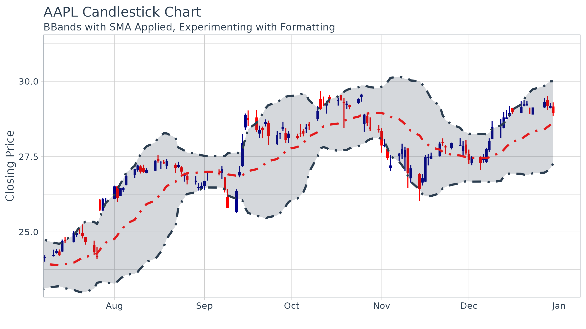
Example 3: Adding BBands to multiple stocks
The process is very similar to charting moving averages for multiple stocks.
start <- end - weeks(24)
FANG %>%
dplyr::filter(date >= start - days(2 * 20)) %>%
ggplot(aes(x = date, y = close,
open = open, high = high, low = low, close = close,
group = symbol)) +
geom_barchart() +
geom_bbands(ma_fun = SMA, sd = 2, n = 20, linetype = 5) +
labs(title = "FANG Bar Chart",
subtitle = "BBands with SMA Applied, Experimenting with Multiple Stocks",
y = "Closing Price", x = "") +
coord_x_date(xlim = c(start, end)) +
facet_wrap(~ symbol, ncol = 2, scales = "free_y") +
theme_tq()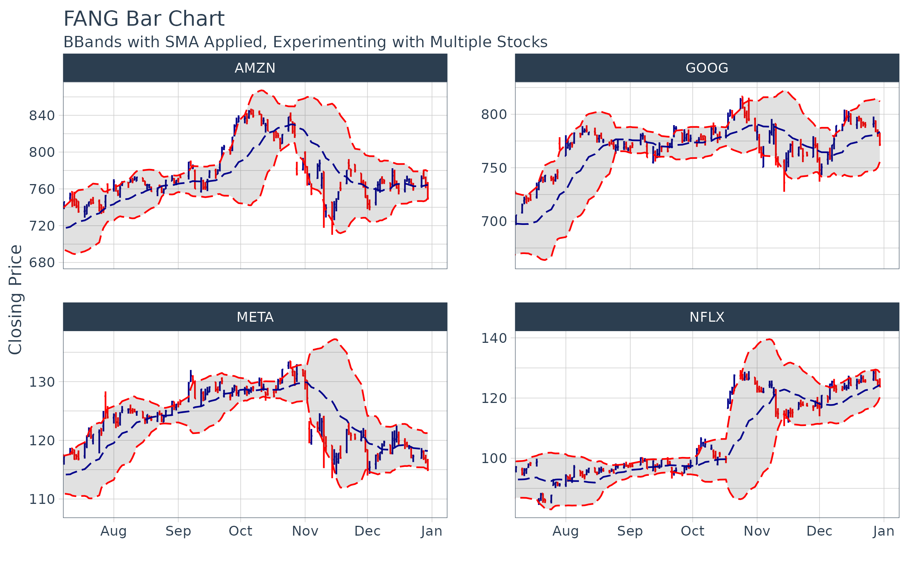
ggplot2 Functionality
Base ggplot2 has a ton of functionality that can be
useful for analyzing financial data. We’ll go through some brief
examples using Amazon (AMZN).
Example 1: Log Scale with scale_y_log10
ggplot2 has the scale_y_log10() function to
scale the y-axis on a logarithmic scale. This is extremely helpful as it
tends to expose linear trends that can be analyzed.
Continuous Scale:
AMZN %>%
ggplot(aes(x = date, y = adjusted)) +
geom_line(color = palette_light()[[1]]) +
scale_y_continuous() +
labs(title = "AMZN Line Chart",
subtitle = "Continuous Scale",
y = "Closing Price", x = "") +
theme_tq()
Log Scale:
AMZN %>%
ggplot(aes(x = date, y = adjusted)) +
geom_line(color = palette_light()[[1]]) +
scale_y_log10() +
labs(title = "AMZN Line Chart",
subtitle = "Log Scale",
y = "Closing Price", x = "") +
theme_tq()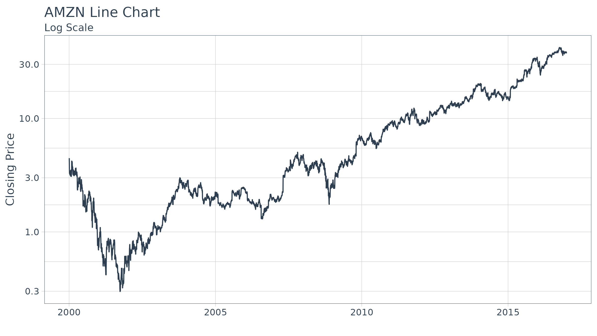
Example 2: Regression trendlines with geom_smooth
We can apply a trend line quickly adding the
geom_smooth() function to our workflow. The function has
several prediction methods including linear ("lm") and
loess ("loess") to name a few.
Linear:
AMZN %>%
ggplot(aes(x = date, y = adjusted)) +
geom_line(color = palette_light()[[1]]) +
scale_y_log10() +
geom_smooth(method = "lm") +
labs(title = "AMZN Line Chart",
subtitle = "Log Scale, Applying Linear Trendline",
y = "Adjusted Closing Price", x = "") +
theme_tq()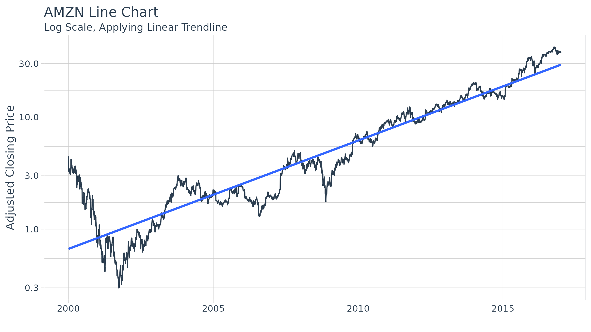
Example 3: Charting volume with geom_segment
We can use the geom_segment() function to chart daily
volume, which uses xy points for the beginning and end of the line.
Using the aesthetic color argument, we color based on the value of
volume to make these data stick out.
AMZN %>%
ggplot(aes(x = date, y = volume)) +
geom_segment(aes(xend = date, yend = 0, color = volume)) +
geom_smooth(method = "loess", se = FALSE) +
labs(title = "AMZN Volume Chart",
subtitle = "Charting Daily Volume",
y = "Volume", x = "") +
theme_tq() +
theme(legend.position = "none") 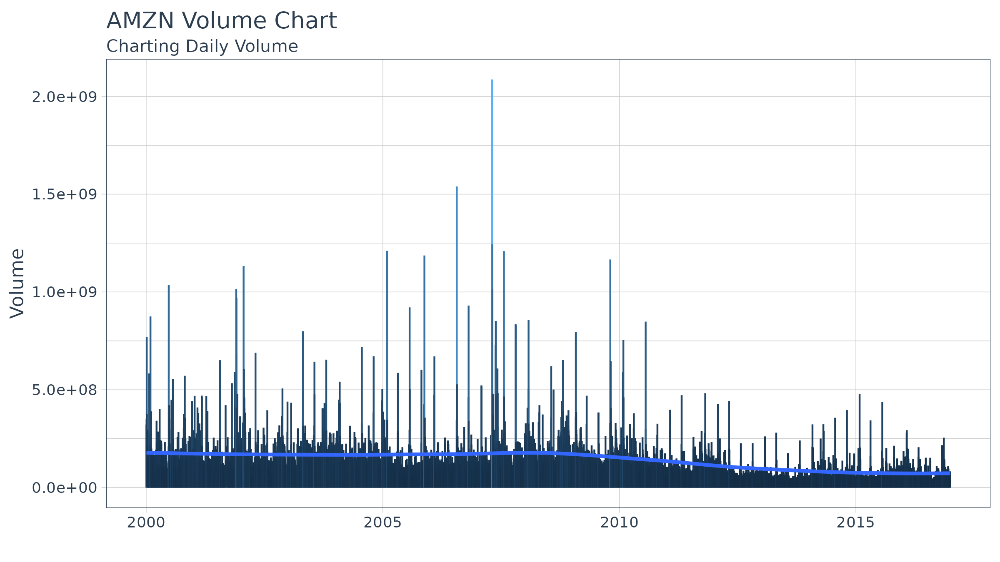
And, we can zoom in on a specific region. Using
scale_color_gradient we can quickly visualize the high and
low points, and using geom_smooth we can see the trend.
start <- end - weeks(24)
AMZN %>%
dplyr::filter(date >= start - days(50)) %>%
ggplot(aes(x = date, y = volume)) +
geom_segment(aes(xend = date, yend = 0, color = volume)) +
geom_smooth(method = "loess", se = FALSE) +
labs(title = "AMZN Bar Chart",
subtitle = "Charting Daily Volume, Zooming In",
y = "Volume", x = "") +
coord_x_date(xlim = c(start, end)) +
scale_color_gradient(low = "red", high = "darkblue") +
theme_tq() +
theme(legend.position = "none") 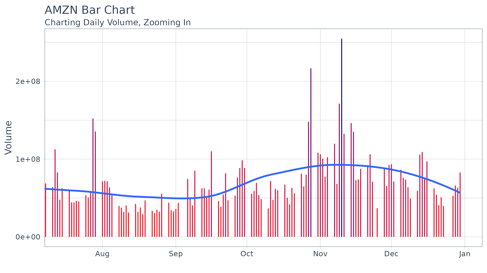
Themes
The tidyquant package comes with three themes to help
quickly customize financial charts:
-
Light:
theme_tq()+scale_color_tq()+scale_fill_tq() -
Dark:
theme_tq_dark()+scale_color_tq(theme = "dark")+scale_fill_tq(theme = "dark") -
Green:
theme_tq_green()+scale_color_tq(theme = "green")+scale_fill_tq(theme = "green")
Dark
n_mavg <- 50 # Number of periods (days) for moving average
FANG %>%
dplyr::filter(date >= start - days(2 * n_mavg)) %>%
ggplot(aes(x = date, y = close, color = symbol)) +
geom_line(linewidth = 1) +
geom_ma(n = 15, color = "darkblue", size = 1) +
geom_ma(n = n_mavg, color = "red", size = 1) +
labs(title = "Dark Theme",
x = "", y = "Closing Price") +
coord_x_date(xlim = c(start, end)) +
facet_wrap(~ symbol, scales = "free_y") +
theme_tq_dark() +
scale_color_tq(theme = "dark") +
scale_y_continuous(labels = scales::label_dollar())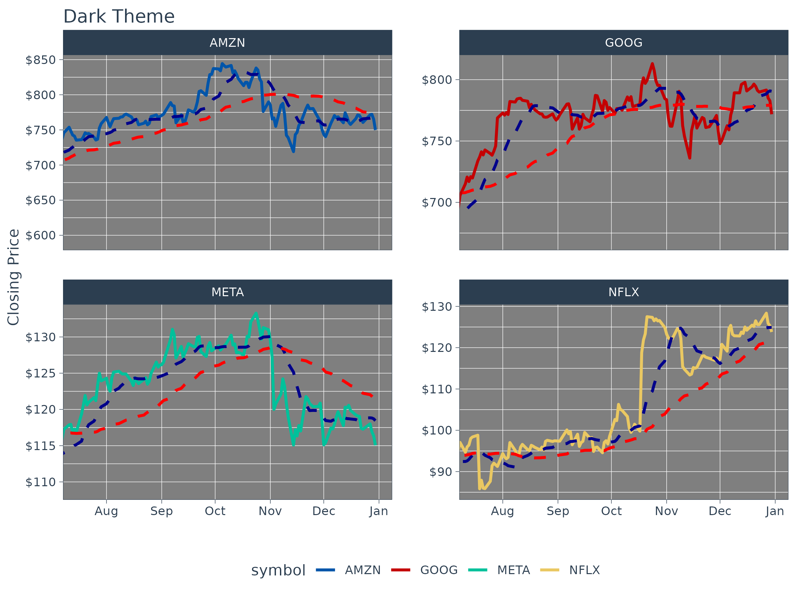